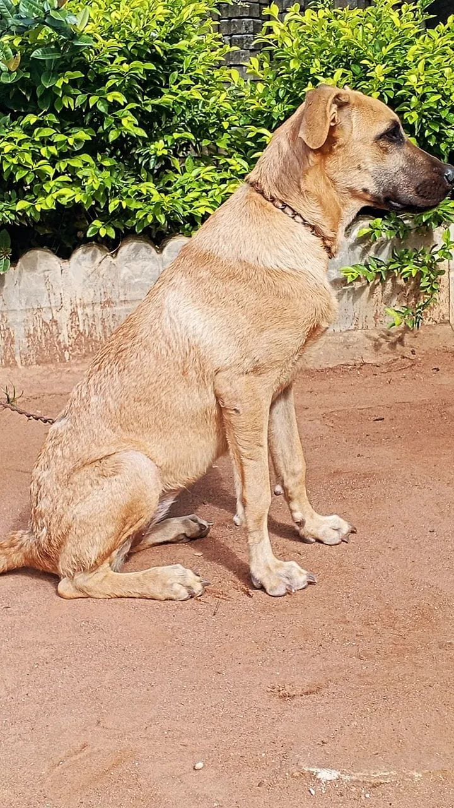
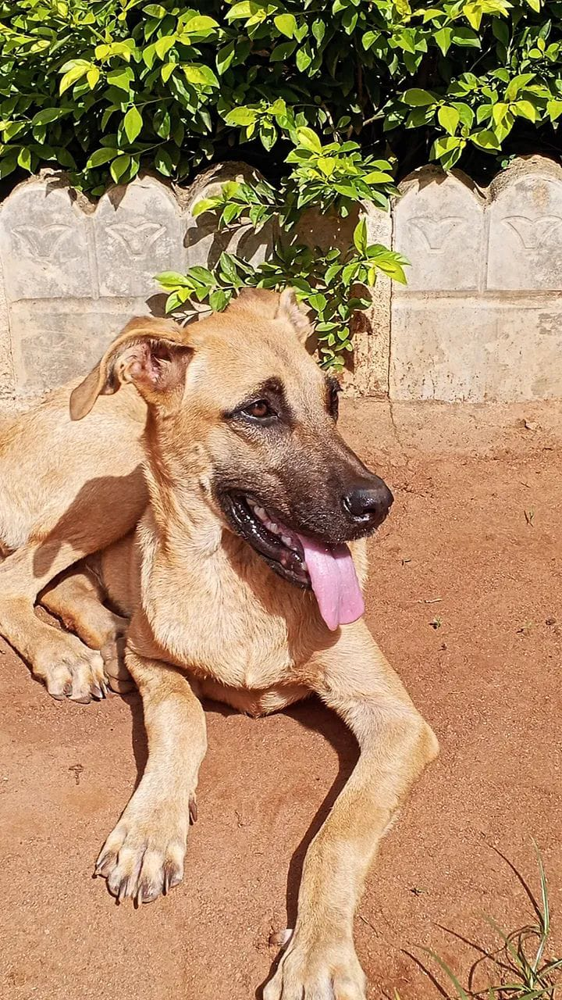
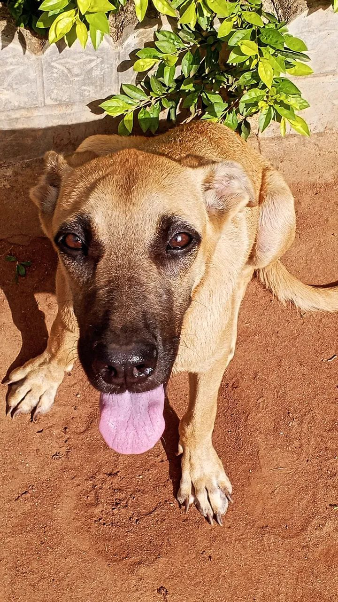
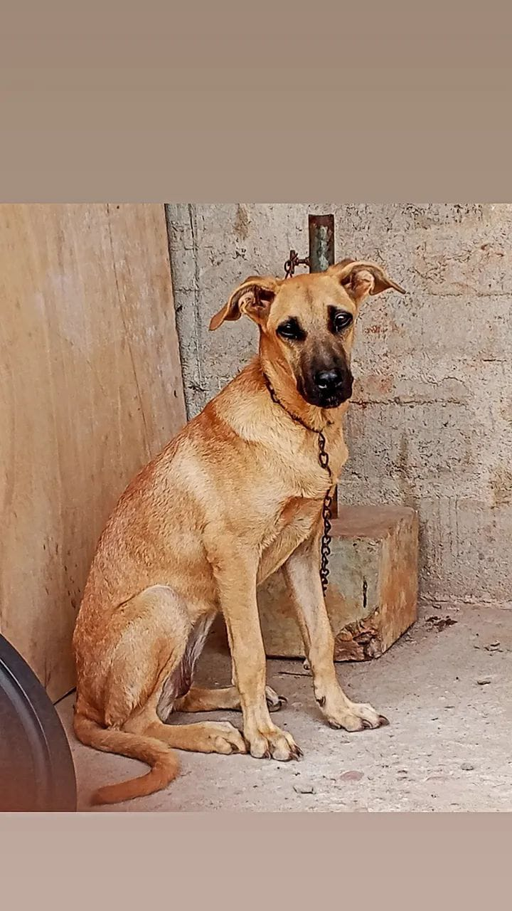
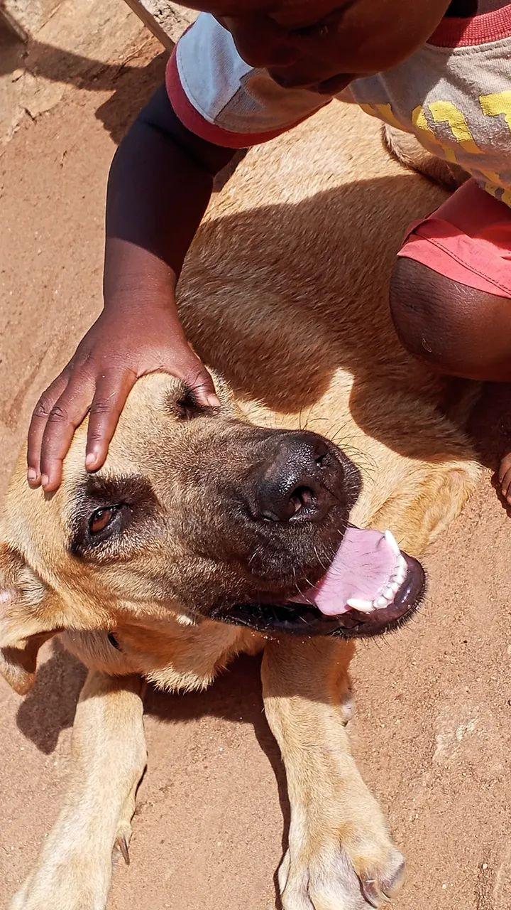

Nikè est une chienne d'un an, issue du croisement entre un Boerboel et un Berger allemand, deux grandes races. Très active, elle a de l'énergie à revendre et possède un tempérament affirmé, avec des traits de caractère hérités de ses deux origines.
NIKÈ EN IMAGES
Une compagne pleine d'énergie.





MES CONSEILS
Prendre soin d'un chien, c'est une responsabilité.
Alimentation
Un chien est naturellement carnivore, mais son alimentation doit surtout être complète et adaptée à son âge, sa taille et son activité. Demande conseil à un vétérinaire pour choisir les bons apports en protéines, lipides et glucides, avec de l'eau propre à volonté.
Hygiène
Lave ton chien environ deux fois par mois, en adaptant la fréquence à sa race, son pelage et ses besoins corporels. Brosse-le régulièrement et surveille ses oreilles, ses griffes et l'état de sa peau.
Promenades
Un chien très actif a besoin de sorties régulières et de moments de stimulation. Utilise la laisse tant qu'il ne s'est pas habitué à l'extérieur et qu'il ne répond pas correctement aux consignes.
Éducation
L'éducation demande beaucoup de patience. Un chien a besoin de repères, pas de violence. Des règles simples, constantes et positives l'aideront à devenir plus équilibré à l'âge adulte.
Sommeil
Adopter un chien, c'est accueillir un être vivant et un compagnon. Offre-lui un espace propre, calme et confortable, ainsi que de l'attention et de la bienveillance au quotidien.
Suivi santé
Ne néglige pas les vaccins, les vermifuges et le suivi vétérinaire. Les vitamines ou compléments ne doivent être donnés que sur recommandation d'un professionnel.
À RETENIR
Chaque chien a ses besoins.
L'âge, la race, la taille, le comportement et l'état de santé de ton chien doivent guider les soins à lui apporter. En cas de doute, de changement de comportement ou de problème de santé, demande conseil à un vétérinaire.